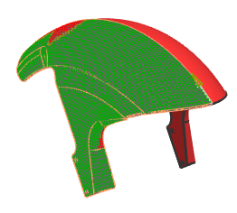

View the fiber orientations
-
 Simulation Navigator
Simulation Navigator -
 Ply 1 (under Mud_guard)
Ply 1 (under Mud_guard)
-
 View Fiber Orientations
View Fiber Orientations
Note
In the red zones, fiber shearing occurs because the angle between the warp and weft directions is greater than the specified lock angle.
-
Ply 2
-
View Fiber Orientations
